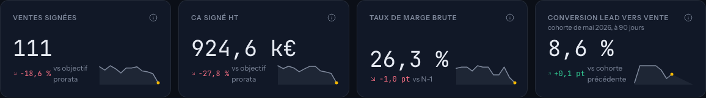
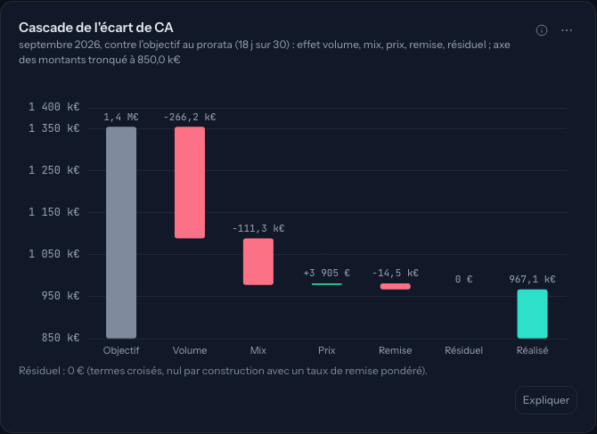
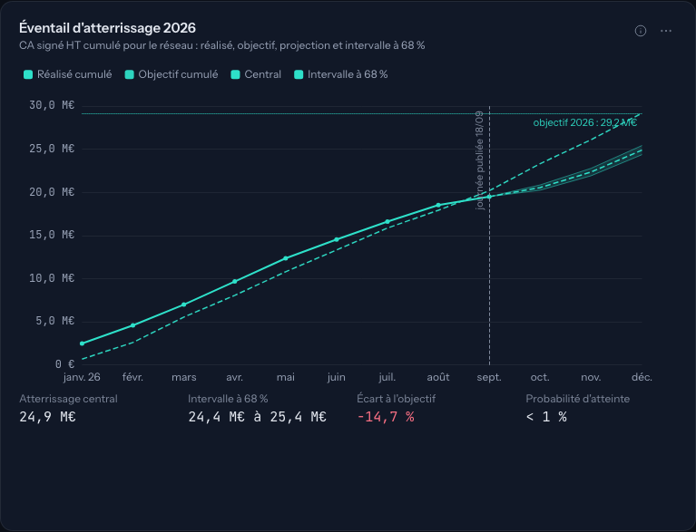

Synthèse d'une page · candidature Responsable Performance
Buta.Lyfh
Le cockpit d'un Responsable Performance, du lead à l'encaissement, sur un réseau d'installateurs simulé posé sur le marché réel.
Onze écrans en ligne sur https://buta.lyfh.fr : ventes et marge, funnel, forecast, pose et encaissement, plans d'action et rituels, qualité des données, territoires, automatisations, analyste. Chaque chiffre vient d'une vue SQL documentée, chaque écran affiche ses sources ; les cinq attentes de l'annonce se retrouvent écran par écran.
Ce que demande l'annonce, et où on le voit
| Attente du poste | Écrans | Ce que l'écran montre |
|---|---|---|
| Construire et fiabiliser le pilotage du lead à l'encaissement | Vue d'ensemble, Funnel, Qualité | Un seul flux de données, des définitions écrites (fiche « i » sur chaque indicateur), douze contrôles de cohérence chaque matin, un badge de fraîcheur. |
| Analyser et éclairer la décision : écarts de CA, marge, conversion, forecast | Ventes et marge, Forecast | Cascade de l'écart (volume, mix, prix, remise), atterrissage en éventail avec probabilité d'atteinte, hypothèses écrites et testables au curseur. |
| Transformer l'analyse en plans d'action : leads, mix, panier, remises, annulations, coûts d'acquisition, délais | Funnel, Ventes et marge, Forecast, Plans d'action | Chaque anomalie est nommée, chiffrée, datée ; douze plans avec propriétaire, gain attendu, échéance et indicateur suivi. |
| Professionnaliser les rituels : revues de performance, de pipe, de marge, de forecast | Plans d'action et rituels, Vue d'ensemble, alertes du matin | Quatre rituels avec ordre du jour et indicateurs ; revue hebdomadaire rédigée chaque lundi à partir des faits SQL, chaque nombre vérifié. |
| Faire évoluer outils, référentiels, BI, automatisation | Qualité, Automatisations, Méthode, Analyste | Réconciliation des libellés d'une agence intégrée, export Power BI en modèle en étoile avec mesures DAX, workflows n8n et leur journal, analyste qui répond en SQL contrôlé. |


